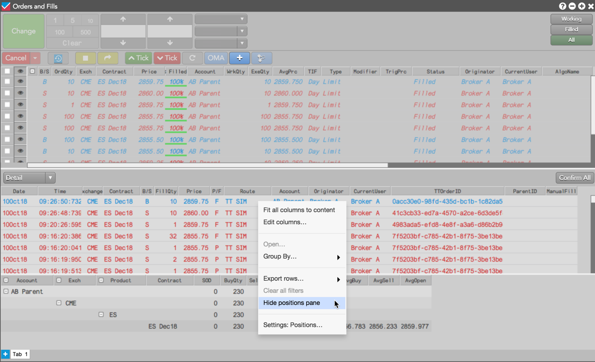

The Orders and Fills widget helps you easily monitor and manage your working orders and fills. It combines the features and functionality of the Order Book, Fills and Positions widgets into a single widget.

-
The Order Book pane displays the working orders for all accounts visible to the user.
-
The Fills pane displays the fills for every order selected in the Order Book pane, allowing you to focus quickly on fills for specific, individual orders.
-
The Positions pane displays the positions for all fills displayed in the Fills pane, giving you a snapshot of the related positions and P/L.
Note: You can hide the Fills and Position panes by selecting Hide from their respective context menus. Selecting Show will restore a previously hidden pane.
